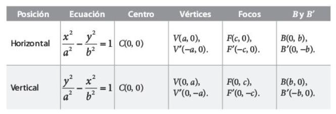

¿Qué es la hipérbola?

La hipérbola como lugar geométrico: es aquél lugar geométrico de los puntos del plano que se mueven de tal manera que el valor absoluto de la diferencia de sus distancias a dos puntos fijos llamados focos son siempre constantes.
Elementos de la Hipérbola
- Excentricidad: mide la abertura de la hipérbola.
- Lado Recto: es un segmento perpendicular al eje transversal y que pasa por el foco. Naturalmente, la hipérbola tiene dos lados rectos porque tiene dos focos.
- Eje transverso: es el segmento de línea que contiene el centro de la hipérbola y cuyos puntos finales son los dos vértices de la hipérbola.
- Eje conjugado: Es el segmento de recta perpendicular al eje transverso.
- Eje focal: es la distancia focal.
